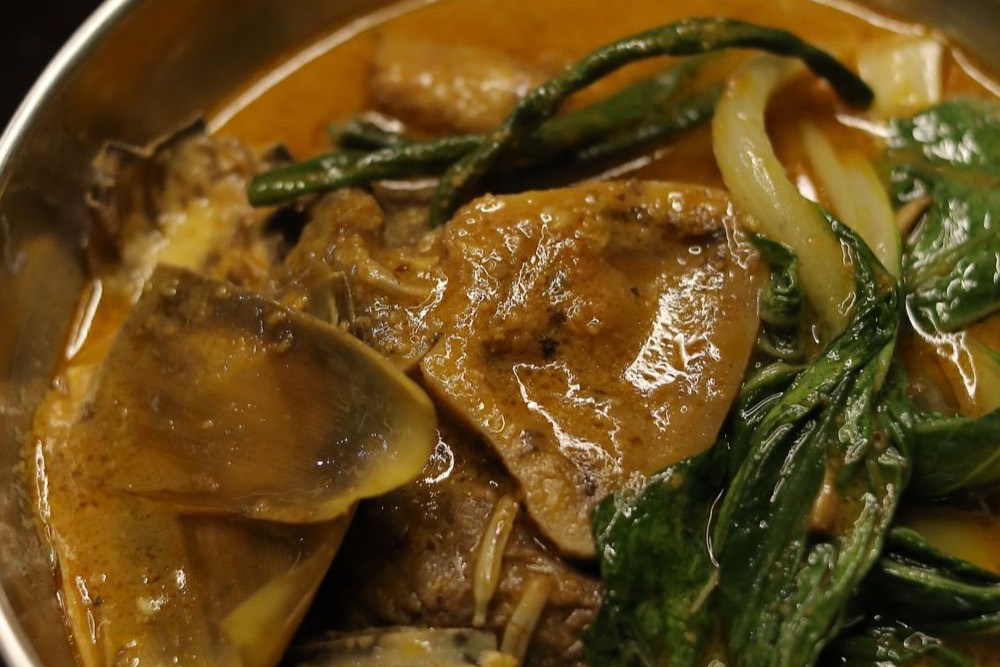

Kare-Kare (Oxtail Peanut Stew)
By Sam · Published July 3, 2026 · Updated October 2, 2026

Research-based recipe guide. Times are estimates; check tenderness and doneness as you cook.
Oxtail and vegetables in a peanut sauce, with bagoong served separately. Allow a long cooking window: tenderness depends on the cut, and the sauce is finished after the meat is ready.
Ingredients
- 1 kg oxtail, cut into pieces
- Water to cover the meat; reserve 4 cups cooking broth
- 3/4 cup unsweetened peanut butter
- 1/4 cup finely ground toasted rice
- Annatto powder, starting with 1 tsp; follow the product directions
- 1 banana blossom, prepared and sliced, optional
- 2 eggplants, sliced
- 1 bunch string beans, cut into 5 cm lengths
- 1 bunch bok choy
- 1 onion, chopped
- 4 cloves garlic, minced
- 2 tbsp cooking oil
- Fish sauce, up to 2 tbsp, to taste
- Cooked shrimp paste (bagoong alamang), to serve
Instructions
- Cover the oxtail with water in a large pot. Bring to a boil, then simmer gently for about 2–3 hours, until a fork enters easily. Add water as needed. Reserve 4 cups of the broth.
- In a clean pot, heat the oil and soften the onion and garlic. Prepare the annatto powder as directed on its label and add it.
- Whisk the peanut butter and ground toasted rice with some warm broth, then add this mixture and the remaining reserved broth. Simmer gently, stirring along the bottom until the sauce thickens.
- Return the tender oxtail. Add a little fish sauce and taste; keep the stew mild because bagoong will be served alongside.
- Add the string beans, eggplant and prepared banana blossom. Simmer until tender, about 8–10 minutes. Add bok choy last and cook until wilted.
- Loosen with broth if too thick. Serve with rice and cooked bagoong on the side. Tell diners this dish contains peanuts and may contain fish and shellfish.
Plan around tenderness
Start the meat well before the rest of the meal. The estimate allows time for a long simmer and a separate sauce stage. A pressure cooker needs the instructions for your appliance, including safe filling and pressure release; the stovetop timing cannot be converted to one universal pressure-cooker number.
If fresh banana blossom is unfamiliar or unavailable, omit it for this version and use the listed eggplant, beans and bok choy. Canned blossom may be an option, but check whether it is packed in brine and rinse according to the label. Use prepared ingredients rather than adding an untrimmed whole blossom.
Adjust the peanut sauce gradually
Warm broth helps you mix the peanut butter smoothly before it meets the whole pot. Ground toasted rice should be fine enough not to leave hard particles. The sauce continues thickening, so keep some broth nearby rather than committing all the liquid at once.
Annatto is for color; products have different concentrations, so the old two-tablespoon instruction is not a reliable rule for every powder. Peanuts are central to this recipe. Replacing them would require a different recipe and a careful allergy discussion, not just a hidden ingredient swap. For a shared menu, compare the preparation order in the kamayan planning guide.
Store and reheat safely
Chill within two hours; one hour above 32°C / 90°F. Refrigerate leftovers for 3–4 days. Reheat to 74°C / 165°F.
Frequently Asked Questions
Can I use a different beef cut?
A braising cut such as beef shank is an option, but use tenderness as your check and expect a different cooking time.
What if the sauce is too thick?
Stir in warm broth a little at a time. Adjust the consistency before adding more seasoning.
Sources and recipe context
Vanjo Merano: Kare Kare provides a published preparation to compare with this editorial guide; variations and quantities differ. Safety references are linked above. Send a correction.
Gabay na batay sa pagsasaliksik. Tantiya ang oras; suriin ang lambot at pagkaluto.
Buntot ng baka at gulay sa sarsang mani, may hiwalay na bagoong. Maglaan ng mahabang oras: depende sa hiwa ang lambot, at tatapusin ang sarsa kapag handa na ang karne.
Mga sangkap
- 1 kg buntot ng baka, hiniwa
- Tubig para ilubog ang karne; magtabi ng 4 tasang sabaw
- 3/4 tasang peanut butter na walang asukal
- 1/4 tasang pinong giniling na binusang bigas
- Atsuete powder, simulan sa 1 kutsarita; sundin ang tagubilin
- 1 puso ng saging, nilinis at hiniwa, opsyonal
- 2 talong, hiniwa
- 1 tali ng sitaw, hiwang 5 cm
- 1 tali ng pechay
- 1 sibuyas, tinadtad
- 4 butil ng bawang, tinadtad
- 2 kutsarang mantika
- Patis, hanggang 2 kutsara, ayon sa lasa
- Lutong bagoong alamang, panghain
Paraan ng pagluto
- Ilubog ang buntot sa tubig sa malaking kaldero. Pakuluin, saka hinaan sa loob ng mga 2–3 oras hanggang madaling tusukin. Dagdagan ng tubig kung kailangan. Magtabi ng 4 tasang sabaw.
- Sa malinis na kaldero, painitin ang mantika at palambutin ang sibuyas at bawang. Ihanda ang atsuete ayon sa label at idagdag.
- Haluin ang peanut butter at giniling na binusang bigas sa kaunting mainit na sabaw. Ilagay ang halo at natitirang sabaw. Pakuluan nang mahina, hinahalo hanggang ilalim, hanggang lumapot.
- Ibalik ang malambot na buntot. Maglagay ng kaunting patis at tikman; panatilihing banayad dahil may kasamang bagoong.
- Idagdag ang sitaw, talong, at nilinis na puso ng saging. Pakuluan hanggang lumambot, mga 8–10 minuto. Ihuli ang pechay at lutuin hanggang malanta.
- Dagdagan ng sabaw kung sobrang lapot. Ihain kasama ng kanin at hiwalay na lutong bagoong. Ipaalam na may mani at maaaring may isda at shellfish.
Magplano ayon sa lambot
Unahin ang karne bago ang ibang bahagi ng pagkain. May oras ang tantiya para sa mahabang pagpapakulo at hiwalay na paggawa ng sarsa. Kung pressure cooker, sundin ang tagubilin ng inyong kagamitan, kabilang ang tamang dami at ligtas na pagpapakawala ng pressure; walang iisang oras na angkop sa lahat.
Kung hindi pamilyar o walang sariwang puso ng saging, maaari itong alisin at gamitin ang talong, sitaw, at pechay. Maaari ang de-lata ngunit suriin kung nasa brine at banlawan ayon sa label. Linisin ang sangkap sa halip na ilagay ang buong hindi inihandang puso.
Paunti-unting ayusin ang sarsa
Mas madaling haluin ang peanut butter sa mainit na sabaw bago idagdag sa kaldero. Dapat pino ang binusang bigas para walang matitigas na buo-buo. Patuloy na lumalapot ang sarsa, kaya magtabi ng sabaw sa halip na ilagay agad lahat.
Para sa kulay ang atsuete; iba-iba ang tapang ng produkto kaya hindi angkop ang dating dalawang-kutsarang tagubilin para sa bawat powder. Pangunahing sangkap ang mani. Kailangan ng ibang recipe at pag-usapan ang allergy kung papalitan ito. Tingnan ang gabay sa kamayan para sa pagkakasunod ng paghahanda.
Ligtas na pagtatago at pag-init
I-refrigerate sa loob ng dalawang oras; isang oras kapag higit sa 32°C / 90°F. Itago ang tira nang 3–4 araw. Initin sa 74°C / 165°F.
Mga madalas na tanong
Maaari bang ibang bahagi ng baka?
Maaaring biyas o ibang hiwang pangpakulo, ngunit lambot ang suriin at asahan ang ibang oras.
Paano kung sobrang lapot?
Paunti-unting haluin ang mainit na sabaw. Ayusin muna ang lapot bago dagdagan ang timpla.
Mga sanggunian
May nailathalang paraan ang Vanjo Merano: Kare Kare na maaaring ihambing sa gabay na ito; magkakaiba ang bersyon at dami. Naka-link sa itaas ang sanggunian sa kaligtasan. Magpadala ng pagwawasto.